TECHVESTVENTURES DAILY RISK ALERTS — Emergent News Digest — Nov 18, 2026, 9:00 AM EST ALL RISK REPORTS click TVV Risk Center
TVV RESEARCH DIGEST — November 18, 2026 — 13 desks
Prioritized Risk Summary November 18, 2026
| Sections Ranked for Importance Today | |
|---|---|
| TECHNOLOGY | Nvidia beats: $115.8B revenue, $130B guide; board shuts door on Huang return |
| DERIVATIVES | 2x NVDA funds swing up to 11% overnight; private credit defaults 6.2% |
| AI BOOST | AI chain lifted by Nvidia; Anthropic IPO prices after today's close |
| GEOPOLITICS | Iran drones target US Patriot systems in Kuwait; Bahrain intercepts attacks |
| ECONOMY | Fed hike odds 96.7% for December; Waller turns hawkish again |
| COMMODITY | Gold falls to about $3,768, a year-plus low, as Fed hike bets build |
| TERROR | GAO: four top chatbots produced viable bombing and grid-attack plans |
| PREDICTIONS | Kalshi: Huang return as CEO 10%; Haas leads next-CEO market at 22% |
| STOCKS | NVDA +5.3% after hours, flat Wed after a 24% November slide |
| INFRASTRUCT | Equinor still neutralizing IT cyberattack; production unaffected |
| HEALTH | Pandemic odds stay below 2% on Polymarket; no new Ebola count today |
| SPACE | NOAA outlook peaks at Kp 5 minor-storm level today |
| QUAKES | No qualifying deadly M6+ quake since Nov 16; 140 M6+ in 12 months |
1. Major Geopolitical Conflict Developments
- ★ Iran widened its Gulf attacks overnight: the Iranian army says its combat and kamikaze drones targeted Patriot air-defense systems and launch platforms at the US-used Ali Al-Salem Air Base in Kuwait. Kuwait said explosions heard were its air defenses intercepting the attacks and called the strike a flagrant violation of its sovereignty; the GCC holds Iran responsible for the escalation. Arab News · AP
- ★ Bahrain's defense force said it intercepted a number of Iranian aerial attacks; the interior ministry twice told residents to shelter, and civil defense evacuated a building in Souq Waqif and put out a fire whose cause is under investigation. Separately, the Saudi-led coalition says it struck 60 Houthi military targets across Yemen, including underground missile storage tunnels. Arab News
- ★ Nvidia and export controls: the Commerce Department will require licenses for advanced-chip shipments to Singapore, Malaysia, Indonesia, Thailand and Brazil, citing diversion to China, and moved this week to stop Nvidia chips being rented to Chinese firms. Interim CEO Colette Kress said Nvidia sold $2.4 billion of licensed Hopper chips into China last quarter and will stop selling them there. Polymarket prices a 28% chance of a BIS export-control penalty on Nvidia by March 31 (see graph): the near-term risk is regulatory, not demand. CNBC · CNBC analysts · Polymarket
- ★ Ukraine and the alliance rift: Pentagon policy chief Elbridge Colby told Nato allies that deep strikes inside Russia "have not been effective in driving an end to the war"; Germany's Boris Pistorius called that criticism "quite a stupid thing" and Britain said the strikes save lives. Dutch-based Destinus says seven of its Ruta cruise missiles hit the Kerch Bridge, and Moldova's president says a Russian drone flew over Chisinau. The split comes ahead of a Trump–Putin–Xi summit. The Guardian · CNBC
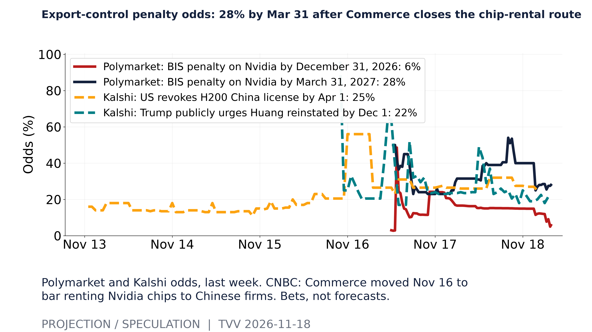
Export-control penalty odds: 28% by Mar 31 after Commerce closes the chip-rental route. Polymarket and Kalshi odds, last week. CNBC: Commerce moved Nov 16 to bar renting Nvidia chips to Chinese firms. Bets, not forecasts. [Projection/Speculation; data as of 2026-11-18 07:51 ET] Source: polymarket.com data page
2. Major Terror / Security Incidents
- ★ AI as an attack planner: a Government Accountability Office report released Wednesday says covert testers got ChatGPT, Claude, Gemini and Grok to produce "largely viable" plans for vehicle bombings at a hotel garage and a convention center and for attacks on electrical substations, in under 12 hours each. Sen. Maggie Hassan: "If Congress doesn't act, it is a question of when, not if, a bad actor will use AI to plan and carry out a major attack." The companies say newer models refuse more often. NOTUS / GAO
- ★ Cyber weak points: in CISA's actively exploited list, OS command injection (CWE-78) leads root causes across 2025–26 with 36 entries, ahead of unsafe deserialization (29) and path traversal (27) (see graph). CISA KEV
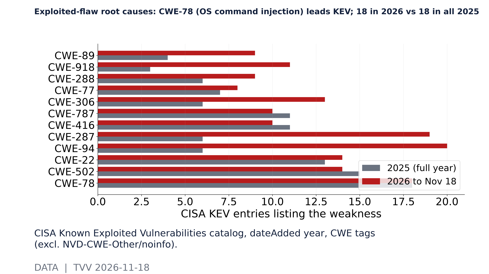
Exploited-flaw root causes: CWE-78 (OS command injection) leads KEV; 18 in 2026 vs 18 in all 2025. CISA Known Exploited Vulnerabilities catalog, dateAdded year, CWE tags (excl. NVD-CWE-Other/noinfo). [Data; data as of 2026-11-17] Source: cisa.gov data page
3. Earthquakes and Eruptions
- ★ No qualifying M6.0+ earthquake with significant casualties or damage since the Nov 16 Peru event. For scale, the USGS logged 140 M6+ quakes in the past 12 months, 15 of them M7+, the largest an M7.8 near Indonesia (see graph). USGS
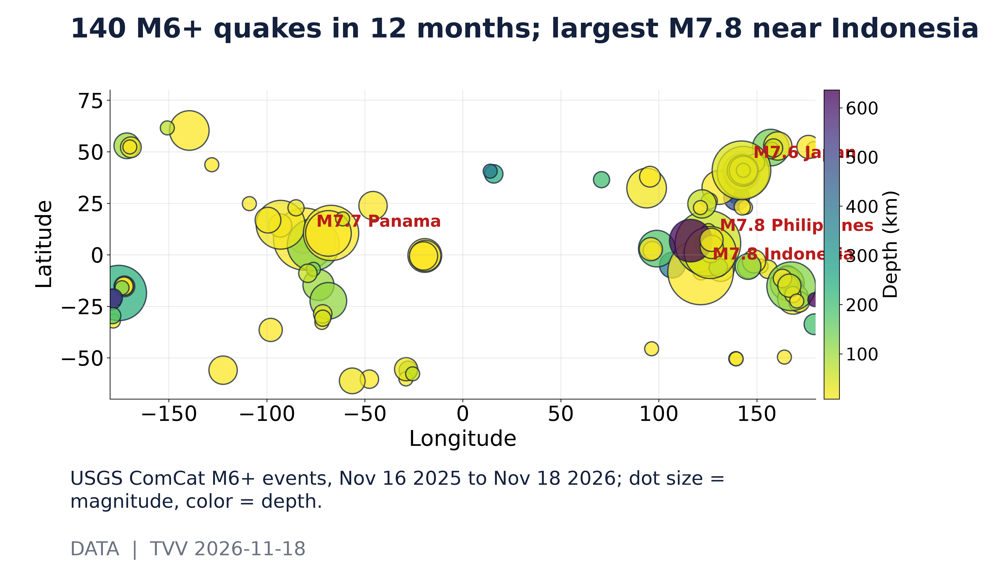
140 M6+ quakes in 12 months; largest M7.8 near Indonesia. USGS ComCat M6+ events, Nov 16 2025 to Nov 18 2026; dot size = magnitude, color = depth. [Data; data as of 2026-11-16] Source: earthquake.usgs.gov data page
4. Solar / Space Weather
- ★ NOAA's 27-day outlook peaks at Kp 5 (minor storm level) today, Nov 18, with solar radio flux between 95 and 135 through Dec 12 (see graph); beyond about a week these outlooks have low skill, so the near-term signal is today's storm window. NOAA SWPC
- ★ Long-horizon warning: magnetic north keeps drifting toward Siberia, and no one can predict the timing of a sudden geomagnetic shift. Michael's own view: 2035 at the earliest, with critical earth changes along the way. NOAA NCEI
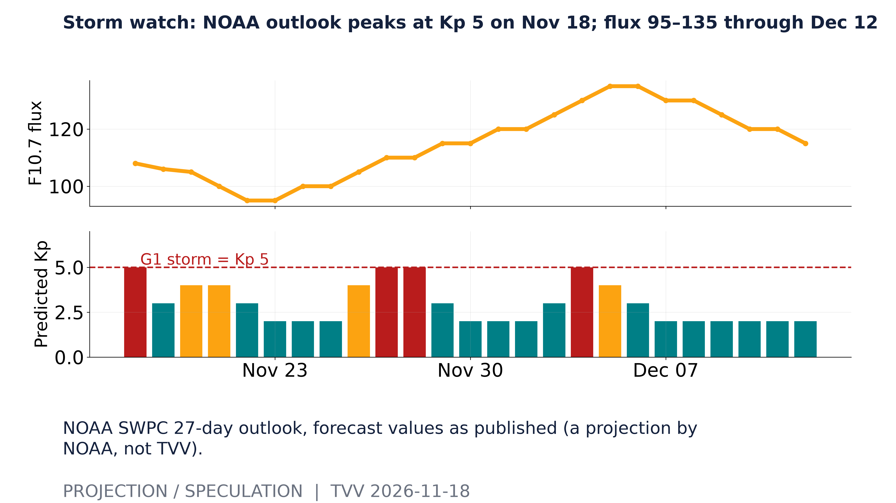
Storm watch: NOAA outlook peaks at Kp 5 on Nov 18; flux 95–135 through Dec 12. NOAA SWPC 27-day outlook, forecast values as published (a projection by NOAA, not TVV). [Projection/Speculation; data as of 2026-11-18] Source: swpc.noaa.gov data page
5. Critical Infrastructure / Transportation Disruptions
- ★ Energy cyber: Norway's Equinor is still working to neutralize a cyberattack on some of its IT systems detected Nov 17; the company says it is not a virus attack, there is no sign data was stolen, production is unaffected, and it is too early to say how long restoration will take. Equinor
- ★ AI build-out borrowing: latest long-term debt stands at Amazon $173 billion, Oracle $130 billion, Alphabet $125 billion, Meta $81 billion, Microsoft $31 billion and CoreWeave $17 billion (see graph), on top of the lease liabilities reported Nov 17. SEC filings
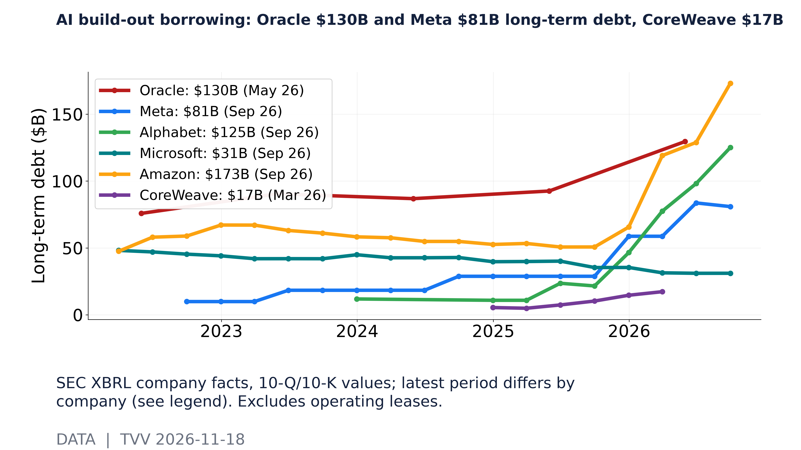
AI build-out borrowing: Oracle $130B and Meta $81B long-term debt, CoreWeave $17B. SEC XBRL company facts, 10-Q/10-K values; latest period differs by company (see legend). Excludes operating leases. [Data; data as of 2026-09] Source: sec.gov data page
6. Econo-Metrics
- ★ Rate-hike pressure: CME FedWatch shows a 96.7% chance of higher rates at the Fed meeting in three weeks, and Fed Governor Christopher Waller made new hawkish comments this morning. Yahoo Finance · Investor's Business Daily
- ★ Jobs: initial jobless claims are low at 200,000, but continuing claims are 1.70 million (see graph): layoffs are rare, yet people who lose jobs are slow to find new ones. FRED
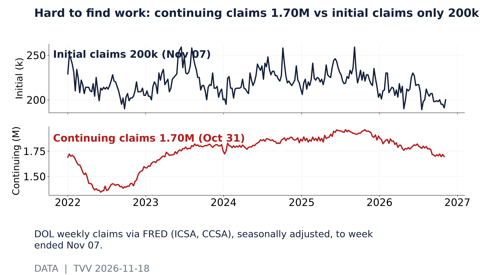
Hard to find work: continuing claims 1.70M vs initial claims only 200k. DOL weekly claims via FRED (ICSA, CCSA), seasonally adjusted, to week ended Nov 07. [Data; data as of 2026-11-07] Source: fred.stlouisfed.org data page
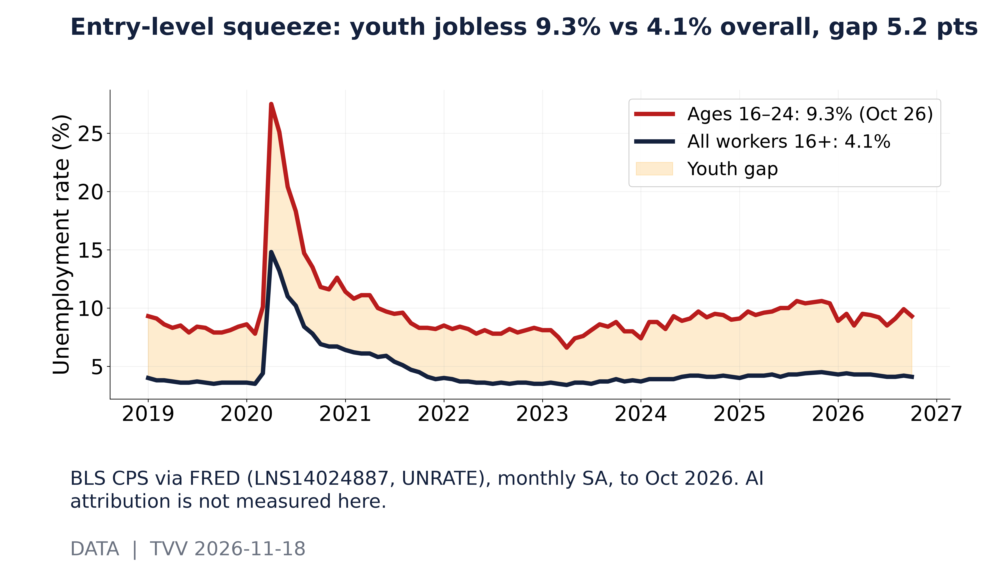
Entry-level squeeze: youth jobless 9.3% vs 4.1% overall, gap 5.2 pts. BLS CPS via FRED (LNS14024887, UNRATE), monthly SA, to Oct 2026. AI attribution is not measured here.
7. Epidemic / Bio-Metrics
- ★ Polymarket pandemic odds stay low: any new pandemic in 2026 1.6%, new coronavirus 1.5%, plague 1.4%, hantavirus 1.1% after a 3% peak (see graph); the market sees no new pandemic declared before year-end. No new WHO Ebola count since Nov 17; COVID variant SV.2.4 and China surge claims remain unconfirmed by WHO, Hong Kong CHP, Taiwan CDC or China CDC data. Polymarket
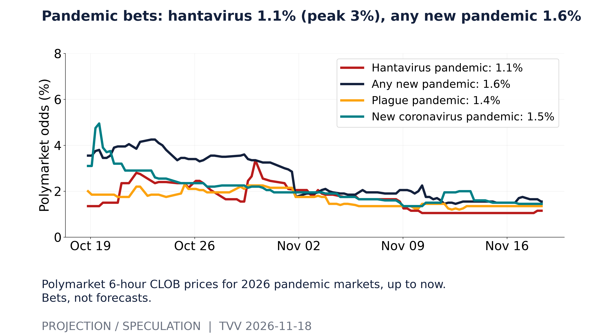
Pandemic bets: hantavirus 1.1% (peak 3%), any new pandemic 1.6%. Polymarket 6-hour CLOB prices for 2026 pandemic markets, up to now. Bets, not forecasts. [Projection/Speculation; data as of 2026-11-18 07:42 ET] Source: polymarket.com data page
8. Gold and Silver and Commodities
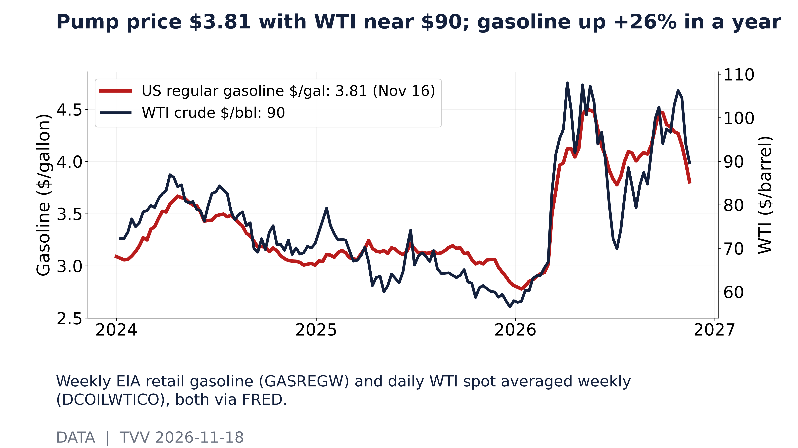
Pump price $3.81 with WTI near $90; gasoline up +26% in a year. Weekly EIA retail gasoline (GASREGW) and daily WTI spot averaged weekly (DCOILWTICO), both via FRED. [Data; data as of 2026-11-16] Source: fred.stlouisfed.org data page
9. Stock Averages and Nasdaq Major Movers
- ★ Nvidia's session: the stock closed the regular session Tuesday at about $155.50, hit $163.75 after hours (+5.3%) and traded near $159.41 (+2.5%) at 7:42 AM ET (see graph). It had fallen 24% in November and sat at its lowest since July 2025 before the report. Yahoo Finance · CNBC
- ★ Futures: S&P 500 and Nasdaq futures rose early Wednesday while Dow futures slipped slightly; Nvidia and Target both beat and raised, but their stocks diverged. All major indexes had broken below recent lows Tuesday. Wells Fargo cut its Nvidia price target, citing supply-chain focus. Investor's Business Daily · Investing.com
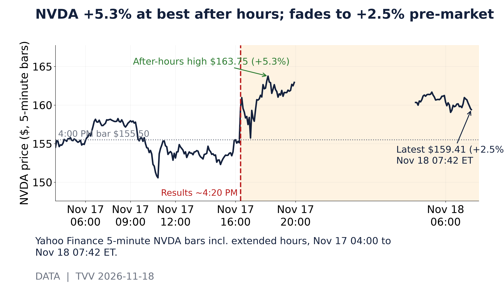
NVDA +5.3% at best after hours; fades to +2.5% pre-market. Yahoo Finance 5-minute NVDA bars incl. extended hours, Nov 17 04:00 to Nov 18 07:42 ET. [Data; data as of 2026-11-18 07:42 ET] Source: finance.yahoo.com data page
10. Polymarket and Kalshi Sentiment Highlights
- ★ Next Nvidia CEO on Kalshi: Arm's Rene Haas leads at 22%, Ian Buck 15%, Jensen Huang 10% (12% before results), Colette Kress 9% (see graph). Board chair Harvey Jones said on the call the board does not intend to bring Huang back, and the market moved against a return. Kalshi · CNBC
- ★ The White House angle: Kalshi gives 35% that Trump publicly calls for Huang's reinstatement by Jan 1 (22% by Dec 1), and 16% for a Huang White House visit by Jan 1 (see graph); political pressure on the board is priced as a real minority chance. Kalshi
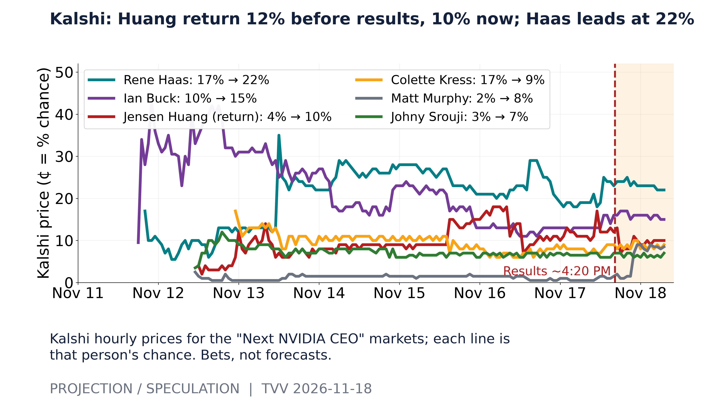
Kalshi: Huang return 12% before results, 10% now; Haas leads at 22%. Kalshi hourly prices for the "Next NVIDIA CEO" markets; each line is that person's chance. Bets, not forecasts. [Projection/Speculation; data as of 2026-11-18 07:51 ET] Source: kalshi.com data page
11. Tech-Metrics
- ★ Nvidia Q3 fiscal 2027 (quarter ended Oct 25): revenue $115.8 billion, up 103% from a year earlier, against the $109.1 billion LSEG consensus; data center $107.6 billion; non-GAAP gross margin 74.9%; non-GAAP EPS $2.68 vs $2.48 expected. Q4 guidance is $130 billion ±3% vs $125.1 billion consensus, with no China data center compute assumed (see graph). Melius Research estimates an extra week in the quarter accounts for $9–10 billion of the sequential jump. Nvidia · CNBC · CNBC
- ★ What the call said: Nvidia raised its fiscal 2028 growth outlook to about 75% from 70%. D.A. Davidson's Gil Luria: "That's by far the most important thing that happened." eToro's Josh Gilbert called the results "nothing short of astonishing" but said investors "will still be left with the uncertainty of who and what comes next." Supply commitments rose to $390 billion from $279 billion in three months, and the Vera Rubin platform has already brought in $20 billion. CNBC · CNBC analysts
- ★ The CEO question and the probes: Argus's James Kelleher noted that the chair said the board accepted Huang's resignation unanimously and will not invite him back; StoneX's Cody Acree: "Nvidia is not going to be the same company without Jensen, but there are some things that can't be ignored." The Wall Street Journal reported an SEC investigation of the company. Morningstar's Brian Colello: "We're at a point of peak uncertainty because investors still don't know what Nvidia's long-term leadership will look like." CNBC analysts · CNBC
- ★ Odds on the price: Polymarket gives 60% that NVDA closes November above $160 and 46% above $170, against a pre-market price near $159 (see graph); traders see roughly even odds the post-earnings gain holds through month-end. Polymarket · Yahoo Finance
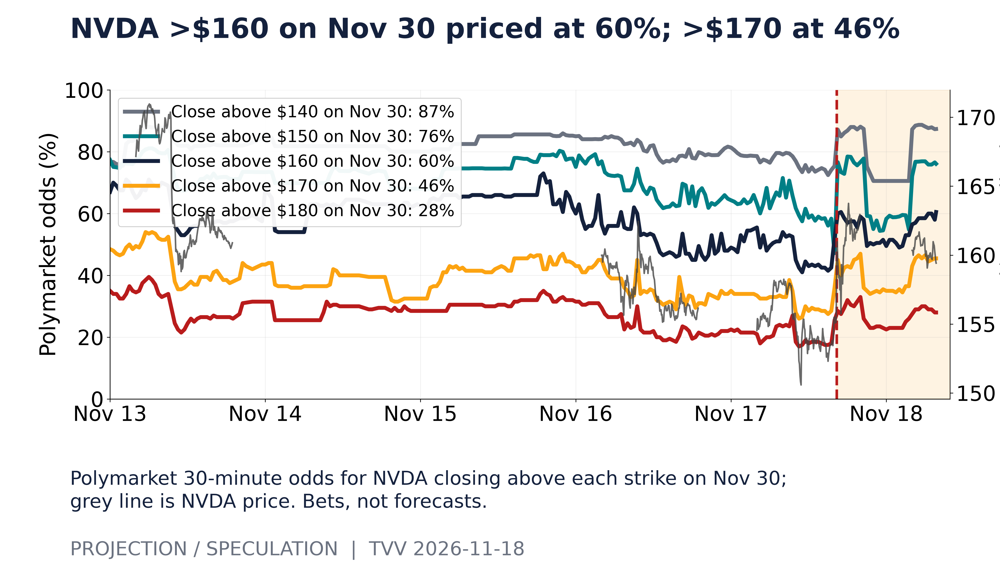
NVDA >$160 on Nov 30 priced at 60%; >$170 at 46%. Polymarket 30-minute odds for NVDA closing above each strike on Nov 30; grey line is NVDA price. Bets, not forecasts. [Projection/Speculation; data as of 2026-11-18 07:51 ET] Source: polymarket.com data page
[Data; data as of 2026-11-17 after close] Source: cnbc.com data page
12. AI Hypergrowth Risks
- ★ Nvidia's beat lifted the AI chain: after hours CoreWeave rose 9%, Iren 10% and Nebius 11%; by early Wednesday the gains were smaller, with CoreWeave +2.7%, TSMC +1.8%, the semiconductor ETF SMH +1.3% and Micron +1.2% (see graph). Morgan Stanley's Michael Wilson said AI remains a "desirable investment" but spending may not continue at the pace investors expected six months ago. CNBC analysts · CNBC · Yahoo Finance
- ★ Anthropic's IPO is set to price after today's close (Nasdaq: ANT). Fast Company frames the listing as a bet that a product can build a company. It is the year's biggest AI test after Nvidia. Investor's Business Daily · Fast Company
- ★ Entry-level squeeze: unemployment for ages 16–24 is 9.3% against 4.1% for all workers, a 5.2-point gap vs 4.5 in Nov 2022 (see graph); this series does not by itself measure AI's role. BLS via FRED
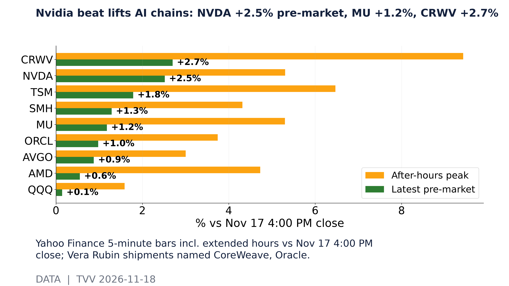
Nvidia beat lifts AI chains: NVDA +2.5% pre-market, MU +1.2%, CRWV +2.7%. Yahoo Finance 5-minute bars incl. extended hours vs Nov 17 4:00 PM close; Vera Rubin shipments named CoreWeave, Oracle. [Data; data as of 2026-11-18 07:51 ET] Source: finance.yahoo.com data page
[Data; data as of 2026-10] Source: fred.stlouisfed.org data page
13. Finance Bubble Derivatives Risk
- ★ Leverage on show: after hours, NVDA rose up to 5.3% while the 2x funds NVDL, NVDU and NVDX rose about 10–11% and the inverse NVDD fell 5.9%; by early Wednesday NVDA was +2.5% and the 2x funds +4–5% (see graph). Yahoo Finance
- ★ Vendor financing under review: Kress said Nvidia will be "rigorously evaluating" future financing deals and stressed that past guarantees and backstops are contingent. Luria: "I would temper their enthusiasm with the fact that they left room to pull back from all these programs." CNBC analysts
- ★ Private credit stress: Fitch's US private credit default rate was 6.2% for the 12 months to October, at or above 6% since April; interest deferrals and payment-in-kind interest were 49% of default events, and borrowers with under $25 million EBITDA defaulted at 10.7%. Fitch via ABF Journal
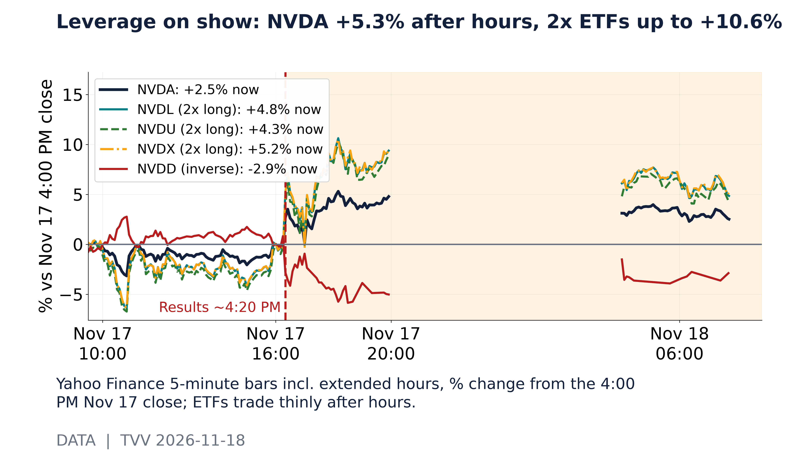
Leverage on show: NVDA +5.3% after hours, 2x ETFs up to +10.6%. Yahoo Finance 5-minute bars incl. extended hours, % change from the 4:00 PM Nov 17 close; ETFs trade thinly after hours. [Data; data as of 2026-11-18 07:51 ET] Source: finance.yahoo.com data page
Prioritized Risk Summary November 18, 2026
| Sections Ranked for Importance Today | |
|---|---|
| TECHNOLOGY | Nvidia beats: $115.8B revenue, $130B guide; board shuts door on Huang return |
| DERIVATIVES | 2x NVDA funds swing up to 11% overnight; private credit defaults 6.2% |
| AI BOOST | AI chain lifted by Nvidia; Anthropic IPO prices after today's close |
| GEOPOLITICS | Iran drones target US Patriot systems in Kuwait; Bahrain intercepts attacks |
| ECONOMY | Fed hike odds 96.7% for December; Waller turns hawkish again |
| COMMODITY | Gold falls to about $3,768, a year-plus low, as Fed hike bets build |
| TERROR | GAO: four top chatbots produced viable bombing and grid-attack plans |
| PREDICTIONS | Kalshi: Huang return as CEO 10%; Haas leads next-CEO market at 22% |
| STOCKS | NVDA +5.3% after hours, flat Wed after a 24% November slide |
| INFRASTRUCT | Equinor still neutralizing IT cyberattack; production unaffected |
| HEALTH | Pandemic odds stay below 2% on Polymarket; no new Ebola count today |
| SPACE | NOAA outlook peaks at Kp 5 minor-storm level today |
| QUAKES | No qualifying deadly M6+ quake since Nov 16; 140 M6+ in 12 months |
TECHVESTVENTURES ACTION-ALERT — November 18, 2026 see all graphs click TVV Risk Center
EDITOR — Michael Hentschel
Most news events require or spawn no action or reaction, some (but not many) are or become warnings. We draw attention to substantial lifestyle risks and market risks in particular, some created by Mid-Term Vote anxieties, Middle East tensions, vast over-indebtedness globally, and other events we track. Longer term but capable of causing sudden power surges as serious as the Carrington Event. Climate instability occasioned by long-term cyclical solar electro-magnetic flares, is becoming much more prominent and even more likely. New AI predictive analytics and pattern seekers are pointed in some of these directions, and we monitor imminent likelihood. Some readers might hedge and others might see opportunity. The above is not investment advice.